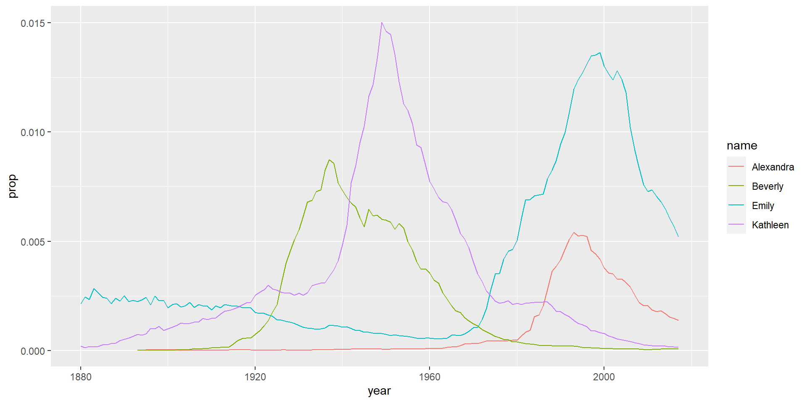

Data Wrangling
R Coding Club
RTG 2660
Data Wrangling?
“Preparation” of the data for analysis: cleaning up variables (outliers, erroneous values, recoding…), changing the structure/format of data frames, merging data sets, calculating new variables, reducing/summarizing variables…
. . .
You will spend a lot more time wrangling the data than analyzing it!
. . .
You could do this manually (e.g. in Excel), but this is tedious, error prone & not reproducible! (+ Datasets can be huge!)
. . .
Fortunately, it is easy to do in R
Accessing Variables/Columns
When wrangling your data in R, you often want to access/use different columns, e.g. to calculate new ones. There are a number of ways you can do that:
# create a small data set for this example:
testdata <- data.frame(a = c(1, 2, 3), # the c() is important!
b = c("a", "b", "c"),
c = c(4, 5, 6))
## access column a only:
# Option 1:
testdata$a[1] 1 2 3# Option 2:
testdata[2:3,"a"][1] 2 3testdata[, 1:2] # index the first column (better practice to use the name!) a b
1 1 a
2 2 b
3 3 c# this way, you could also access rows:
# testdata[1:2, ] # [rows, columns] --> you can leave it empty if you want all
# 1:10 would mean 1 to and incl 10!
# Option 3 (select is a tidyverse function)
library(tidyverse)
select(testdata, a) a
1 1
2 2
3 3data.frame() = function to create a data.frame, which is what holds a data set! (tibbles..)
c() = function to make a vector. A vector is just like one single column of a data frame: It can hold several values, but all of the same type.
subsetting: rows, columns –> leave empty!
Select range!
Use either name or index of column!
select –> tidyverse
Tidyverse
You can do all data wrangling in Base R, i.e. without loading any packages. However, there’s a neat collection of packages called tidyverse, which makes data wrangling even easier!
. . .
Base R:
output_data1 <- function1(data)
output_data2 <- function2(output_data1)
output_data3 <- function3(output_data2)
. . .
Or:
output_data <- function3(function2(function1(data)))
. . .
Tidyverse:
output_data <- data %>% function1() %>% function2(.) %>% function3()
%>% is called the pipe. It takes the output of whatever happens to its left and “hands it over” to the right. There’s also a new base-R-pipe: |>. It is very similar, but sometimes the functionality differs.
Be aware, though, that coding in the tidyverse style is very different than in Base R!
Base R is more similar to “traditional” programming and other programming languages.
For example, you could wrap functions, which would then be carried out from the most nested to the outer function:
output_data <- function3(function2(function1(data)))
function1() will be carried out first, followed by function2(), then function3() .
. . .
In the tidyverse, the same would look like this:
output_data <- data %>% function1() %>% function2() %>% function(3)
%>% is called “the pipe” and will “hand over” whatever has been done to the next part. In this example, the data is handed over to function1(), which is then carried out, the result of which is handed over to function2() etc.
Tidyverse style programming is thus a bit easier to read!
There’s also the new pipe Base R |>, which is similar to %>%.
Tidyverse 2
library(tidyverse) will load a number of packages, such as dplyr, ggplot2, readr, forcats, tibble etc., which are all usefuls for data wrangling.
We will work mainly with functions from the dplyr package, but also use readr to read in data. We will also use ggplot2 to visualize data.
The most important dplyr functions for data wrangling are:
| Function | Description |
|---|---|
| select() | Include or exclude certain columns (variables) |
| filter() | Include or exclude certain rows (observations) |
| mutate() | Create new columns (variables) |
| summarize() | Create new columns that aggregate data/create summary variables for groups of observations (data frame will become smaller) |
| group_by() | Organize the rows (observations) into groups |
| arrange() | Change the order of rows (observations) |
function names very self-explanatory!
Activity 1: Babynames
Open RStudio and set the working directory, ensure the environment is clean.
Open a new RMarkdown document and save it, e.g. as “DataWrangling1.Rmd”.
Install the packages “tidyverse” and “babynames”.
Delete the default text in the Rmd file, insert a new code chunk and insert code that loads the packages babynames and tidyverse.
. . .
# install.packages("tidyverse")
# install.packages("babynames")
library(babynames)
library(tidyverse)load tidyverse last, otherwise functions with same name will be masked from package that is loaded first. Since we often need tidyverse functions, it’s safest to load it last!
Activity 2: Look at the Data
Type the word
babynamesinto your console pane and press enter. What kind of information do you get?“A tibble: 1,924,665 x 5”
tibble is a format for the data frame
~1.9 million rows/observations
5 columns/variables
What kind of columns/variables do we have?
dbl = double/numeric (can take decimals)
chr = character/string (letters or words)
int = integer (cannot take decimales)
(there are also factors = nominal categories (can be words or numbers))
ask first for 1 and 2
Activity 3: Your First Plot
- In a new code chunk, insert and run the following code:
dat <- babynames %>%
filter(name %in% c("Emily",
"Kathleen",
"Alexandra",
"Beverly"), sex=="F")
ggplot(data = dat,
aes(x = year,
y = prop,
colour = name))+
geom_line() 
We first filter four names, assign this new data to dat, and make a linechart using ggplot()!
. . .
- Change the code to male names (that are hopefully present in the dataset) and change
sex=="F"tosex=="M".
Wrangling Babynames
Activity 4: Selecting Variables of Interest
- In a new code chunk, use
select()to select only the columnsyear,sex,name, andpropand store it as a new tibble calledbabynames_reduced. Remember that you can run?selectin the console if you need help, e.g. regarding the input/arguments to the function.
. . .
babynames_reduced <- select(.data = babynames, year, sex, name, prop)
# or alternatively:
babynames_reduced <- babynames %>%
select(year, sex, name, prop)
# or alternatively:
babynames_reduced <- babynames %>%
select(-n) # remove using -Activity 5: Arranging Data
Change the order of the data (oberservations/rows)!
- Using
arrange(), try sorting the data according to thenamescolumn.- What happens?
- How can you sort a column in a descending fashion? Check out the help file (
?arrange).
. . .
sort_asc <- arrange(.data = babynames,
name)
sort_desc <- arrange(babynames,
desc(year)) remember to save data in new tibble/data frame!
Activity 6: Filter Observations
We have already used select() to keep only certain variables, but often we also want to keep only certain observations, e.g. babies born after 1999 (or reaction times that are realistic, not too fast and not too slow, or certain conditions).
We use the function filter() for this.
. . .
Look at the following code and think about what it might do.
filt1 <- filter(.data = babynames,
year > 2000)Detour: Boolean Expressions
The second argument, year > 2000, is a Boolean or logical expression, which means that it results in a value of either TRUE or FALSE. filter() runs this expression and then removes all values/rows that contain FALSE.
There are also other Boolean expressions:
| Operator | Name | is TRUE if and only if |
|---|---|---|
| A < B | less than | A is less than B |
| A <= B | less than or equal | A is less than or equal to B |
| A > B | greater than | A is greater than B |
| A >= B | greater than or equal | A is greater than or equal to B |
| A == B | equivalence | A exactly equals B |
| A != B | not equal | A does not exactly equal B |
| A %in% B | in | A is an element of vector B |
Activity 6b: Filter some more
- Keep only those observations with the name “Mary”.
- Discard all “Mary”’s and keep only observations from year > 2000.
- Keep only those with names of former Queens (Mary, Elizabeth, Victoria).
- Discard the ones with the Queen names!
. . .
First task:
marys <- filter(babynames, name == "Mary"). . .
The second task might be difficult because you have two expressions, name != "Mary" and year > 2000. You can simply add several expressions separated by comma’s in filter:
no_marys_young <- filter(babynames, name != "Mary", year > 2000). . .
Third task:
queens <- filter(babynames, name %in% c("Mary", "Elizabeth", "Victoria")). . .
The fourth task is a bit tricky! You could use three filters in a row with name!="Mary" (or “Elizabeth” or “Victoria”). Or you could use %in%, but then you can’t use the ! in front of the %in%. An alternative to negate the whole expression with !:
no_queens <- filter(babynames,
!(name %in% c("Mary",
"Elizabeth",
"Victoria")))Activity 7: Create New Variables
If we want to create variables that do not exist yet (i.e. by calculating values, combining other variables etc.), we can use mutate()!
- Add a variable called “country” that contains the value “USA” for all observations
. . .
baby_where <- mutate(.data = babynames,
country = "USA"). . .
But mutate is much more powerful and can create variables that differ per observation, depending on other values in the tibble/data frame:
- Create a variable that denotes the decade a baby was born:
baby_decades <- mutate(.data = babynames,
decade = floor(year/10) *10)
head(baby_decades)# A tibble: 6 × 6
year sex name n prop decade
<dbl> <chr> <chr> <int> <dbl> <dbl>
1 1880 F Mary 7065 0.0724 1880
2 1880 F Anna 2604 0.0267 1880
3 1880 F Emma 2003 0.0205 1880
4 1880 F Elizabeth 1939 0.0199 1880
5 1880 F Minnie 1746 0.0179 1880
6 1880 F Margaret 1578 0.0162 1880What happens here?
Activity 8: Summarizing
The goal of data wrangling is often to summarize (or aggregate) the data, e.g. to have an average value per condition. Sometimes you’d also want to calculate descriptive statistics to report.
. . .
You can do so using the function summarise():
# run the filter function just like above again:
dat <- babynames %>%
filter(name %in% c("Emily",
"Kathleen",
"Alexandra",
"Beverly"), sex == "F")
# summarize the data, calculating the number of oberservations:
dat_sum <- summarise(.data = dat,
total = sum(n))
dat_sum# A tibble: 1 × 1
total
<int>
1 2161374As you can see, a new variable named total is created, which contains the total number of observations. There’s also just one row in the data frame, because summarise() reduces the data frame (to only include the necessary information)!
Activity 8: Grouping and Summarizing
Often, we want to summarize data for specific subgroups, e.g. conditions. For this aim, we use summarise() together with group_by():
group_dat <- group_by(.data = dat,
name) group_dat now doesn’t look much different than dat, but the grouping - based on the names, so each name is now a category - is saved in the data frame! (Type group_dat in the console and you will see #Groups: name[4])
If you now run the summarize() code from before (but with group_dat as input), you will not get the total number of observations, but the observations per name!
group_sum <- summarise(.data = group_dat,
total = sum(n))
group_sum# A tibble: 4 × 2
name total
<chr> <int>
1 Alexandra 231364
2 Beverly 376914
3 Emily 841491
4 Kathleen 711605Activity 8b: Grouping and Summarizing 2
You can group by several columns (think of crosstables) and add several columns at once to the data (e.g. doing different calculations - same for mutate()!)
- Use the
baby_decadesdata frame andgroup_by()sex & decade. Save the output to a new data frame/tibble - Use that tibble to calculate the mean and median number of observations.
. . .
group_decades <- group_by(baby_decades,
sex,
decade)
sum_decades <- summarise(group_decades,
mean_year = mean(n),
median_year = median(n))Pipes
Remember the pipe %>%? So far we have always saved intermediate steps in tibbles and used those as input for the next function. With the pipe, we can chain several functions and save relevant results only, no need for crowding the Environment with intermediate tibbles!
pipe_summary <- babynames %>%
mutate(decade = floor(year/10) *10) %>%
filter(name %in% c("Emily",
"Kathleen",
"Alexandra",
"Beverly"), sex=="F") %>%
group_by(name,
decade) %>%
summarise(mean_decade = mean(n))Counting Data
There are several ways to get the number of observations per group. In the tidyverse style, one is to use (group_by() +) summarise() with the function n(). The other, a shortcut, is to use count():
babynames %>%
filter(name %in% c("Emily",
"Kathleen",
"Alexandra",
"Beverly"), sex=="F") %>%
group_by(name) %>%
summarise(n = n())# A tibble: 4 × 2
name n
<chr> <int>
1 Alexandra 117
2 Beverly 122
3 Emily 138
4 Kathleen 138babynames %>%
filter(name %in% c("Emily",
"Kathleen",
"Alexandra",
"Beverly"), sex=="F") %>%
count(name)# A tibble: 4 × 2
name n
<chr> <int>
1 Alexandra 117
2 Beverly 122
3 Emily 138
4 Kathleen 138Ungrouping
Remember that the grouping done with group_by() is saved with the data frame (even though it might not immediately be obvious).
It is good practice to always ungroup() your data once you finished the operations you needed the grouping for!
Data Wrangling 3
Data Wrangling 2? More exercises! Homework! :)
Tidy Data
Tidy data: Data that is easily processed by tidyverse functions (and often the required format for statistical analyses and data visualizations).
Three principles:
Each variable has its own column.
Each observation has its own row.
Each value has its own cell.
. . .
Wide vs. long format data?
Wide format: Each participant/animal… has one row, observations per participant are in columns.
Long format: Each observation = own row. (Likely several rows per participant: Trials etc.)
| ID | Time_1 | Time_2 |
|---|---|---|
| a1 | 230 | 310 |
| a2 | 195 | 220 |
| a3 | 245 | 290 |
| ID | Time | Value |
|---|---|---|
| a1 | 1 | 230 |
| a1 | 2 | 310 |
| a2 | 1 | 195 |
| a3 | 2 | 220 |
| a3 | 1 | 245 |
| a3 | 2 | 290 |
Data often does not come in this format but is rather messy! That’s why we wrangle.
Tidy data is in between wide and long (you can always go longer! :D)
Tidy Data 2
What do you think, which of the following data sets is tidy?
# A tibble: 6 × 4
country year cases population
<chr> <dbl> <dbl> <dbl>
1 Afghanistan 1999 745 19987071
2 Afghanistan 2000 2666 20595360
3 Brazil 1999 37737 172006362
4 Brazil 2000 80488 174504898
5 China 1999 212258 1272915272
6 China 2000 213766 1280428583# A tibble: 12 × 4
country year type count
<chr> <dbl> <chr> <dbl>
1 Afghanistan 1999 cases 745
2 Afghanistan 1999 population 19987071
3 Afghanistan 2000 cases 2666
4 Afghanistan 2000 population 20595360
5 Brazil 1999 cases 37737
6 Brazil 1999 population 172006362
7 Brazil 2000 cases 80488
8 Brazil 2000 population 174504898
9 China 1999 cases 212258
10 China 1999 population 1272915272
11 China 2000 cases 213766
12 China 2000 population 1280428583# A tibble: 6 × 3
country year rate
<chr> <dbl> <chr>
1 Afghanistan 1999 745/19987071
2 Afghanistan 2000 2666/20595360
3 Brazil 1999 37737/172006362
4 Brazil 2000 80488/174504898
5 China 1999 212258/1272915272
6 China 2000 213766/1280428583# A tibble: 3 × 5
country `1999_cases` `2000_cases` `1999_population` `2000_population`
<chr> <dbl> <dbl> <dbl> <dbl>
1 Afghanistan 745 2666 19987071 20595360
2 Brazil 37737 80488 172006362 174504898
3 China 212258 213766 1272915272 1280428583Table1 is tidy!
Analyzing the Autism Spectrum Quotient
For the following activities, we will need the following files:
responses.csv containing the AQ survey responses to each of the 10 questions for the 66 participants
qformats.csv containing information on how a question should be coded - i.e. forward or reverse coding
scoring.csv containing information on how many points a specific response should get; depending on whether it is forward or reverse coded
pinfo.csv containing participant information such as
Age,Sexand importantlyIDnumber.
Set Up
Clear your environment or restart the R session (Session -> Restart R).
Start a new section (# Data Wrangling 3) in your Rmd document.
Make sure you have downloaded the data into your working directory (or set your working directory to the class folder with the data).
Load the Data
Load the four .csv files into your environment, e.g.:
responses <- read_csv("responses.csv")
qformats <- # load in question formats
scoring <- # load in scoring info
pinfo <- # load in participant informationLook at the Data
Is the data (responses) in a tidy format?
. . .
Why is it not tidy?
wide format
Reformatting the Data
Let’s bring the wide data in a longer, tidy format!
. . .
There are several functions in R to reformat data, but the newest ones are pivot_longer() and pivot_wider().
Run the code and see what changes:
rlong <- pivot_longer(data = responses,
cols = Q1:Q10,
names_to = "Question",
values_to = "Response"). . .
Describe what the function does, what does the input/the arguments mean?
Joining the Data
We now want to combine the different data sets: We want to have the information how the questionnaire has to be scored included with the items.
We can find the scoring information (i.e. how the questions are framed, positive or negative/whether they need to be reversed) in the qformats tibble. Furthermore, we can find how many points are given to each item/response in scoring.
We can use the function inner_join() to merge the tibbles.
. . .
Activity: Replace the NULL values in the below code with the necessary variable names to join rlong and qformats by Question.
rlong2 <- inner_join(x = NULL,
y = NULL,
by = "NULL"). . .
rlong2 <- inner_join(x = rlong,
y = qformats,
by = "Question")Describe what happened?
what is forward and reverse scoring?
Combining more Data
You can only join two data frames/tibbles at once.
Now add the scoring data:
rscores <- inner_join(rlong2,
scoring,
c("QFormat", "Response"))Calculate the Questionnaire Scores
How do we need to group and summarize the data to get a sum score per person? (Ignoring the reverse coding for now!) Add the correct column names instead of the NULL.
aq_scores <- rscores %>%
group_by(NULL) %>%
summarise(AQ = sum(NULL)). . .
aq_scores <- rscores %>%
group_by(Id) %>% # group by the ID number in column Id
summarise(AQ = sum(Score)) # sum column Score to obtain AQ scores.Pipe it all together!
aq_scores2 <- responses %>%
pivot_longer(cols = Q1:Q10,
names_to = "Question",
values_to = "Response") %>%
inner_join(qformats, "Question") %>%
inner_join(scoring, c("QFormat", "Response")) %>%
group_by(Id) %>%
summarise(AQ = sum(Score)) Data Wrangling 2
Learning to Wrangle
In small groups (or as homework), work in small groups on the assignments (Activity 1 - Activity 8) in this chapter: https://psyteachr.github.io/quant-fun-v2/data-wrangling-2.html
Solutions
We’ll use data from a paper that investigates whether the ability to perform an action influences perception. In particular, the authors wondered whether participants who played Pong would perceive the ball to move faster when they have a small paddle.
Download the data, set the working directory, clean your environment. Open a new R Markdown file and save it as “DataWrangling2.Rmd”. Delete the text in the document.
Add a new code chunk and read in the data.
Look at the data.
Solutions
library("tidyverse")
pong_data <- read_csv("Data/PongBlueRedBack 1-16 Codebook.csv")
summary(pong_data) Participant JudgedSpeed PaddleLength BallSpeed TrialNumber
Min. : 1.00 Min. :0.0000 Min. : 50 Min. :2.0 Min. : 1.00
1st Qu.: 4.75 1st Qu.:0.0000 1st Qu.: 50 1st Qu.:3.0 1st Qu.: 72.75
Median : 8.50 Median :1.0000 Median :150 Median :4.5 Median :144.50
Mean : 8.50 Mean :0.5471 Mean :150 Mean :4.5 Mean :144.50
3rd Qu.:12.25 3rd Qu.:1.0000 3rd Qu.:250 3rd Qu.:6.0 3rd Qu.:216.25
Max. :16.00 Max. :1.0000 Max. :250 Max. :7.0 Max. :288.00
BackgroundColor HitOrMiss BlockNumber
Length:4608 Min. :0.0000 Min. : 1.00
Class :character 1st Qu.:0.0000 1st Qu.: 3.75
Mode :character Median :1.0000 Median : 6.50
Mean :0.6866 Mean : 6.50
3rd Qu.:1.0000 3rd Qu.: 9.25
Max. :1.0000 Max. :12.00 # look at the data (can also use summary(), str(), head() etc.)
glimpse(pong_data)Rows: 4,608
Columns: 8
$ Participant <dbl> 1, 1, 1, 1, 1, 1, 1, 1, 1, 1, 1, 1, 1, 1, 1, 1, 1, 1, …
$ JudgedSpeed <dbl> 1, 0, 1, 0, 1, 0, 1, 0, 0, 0, 1, 1, 0, 1, 0, 1, 0, 1, …
$ PaddleLength <dbl> 50, 250, 50, 250, 250, 50, 250, 50, 250, 50, 50, 250, …
$ BallSpeed <dbl> 5, 3, 4, 3, 7, 5, 6, 2, 4, 4, 7, 7, 3, 6, 5, 7, 2, 5, …
$ TrialNumber <dbl> 1, 2, 3, 4, 5, 6, 7, 8, 9, 10, 11, 12, 13, 14, 15, 16,…
$ BackgroundColor <chr> "red", "blue", "red", "red", "blue", "blue", "red", "r…
$ HitOrMiss <dbl> 0, 1, 0, 1, 1, 1, 1, 1, 1, 1, 0, 1, 1, 1, 1, 0, 1, 1, …
$ BlockNumber <dbl> 1, 1, 1, 1, 1, 1, 1, 1, 1, 1, 1, 1, 1, 1, 1, 1, 1, 1, …new_pong_data <- pong_data %>%
select(BallSpeed, HitOrMiss, JudgedSpeed, Participant,
TrialNumber) %>%
arrange(desc(HitOrMiss), desc(JudgedSpeed)) %>%
filter(JudgedSpeed == 1,
BallSpeed %in% c("2", "4", "5", "7"),
HitOrMiss == 0) %>%
filter(TrialNumber > 2) %>%
mutate(TrialNumber = TrialNumber -1)
# summarize (use old data frame because we removed variables)
pong_data_hits <- pong_data %>%
group_by(BackgroundColor,
PaddleLength) %>%
summarise(total_hits = sum(HitOrMiss,
na.rm = TRUE),
meanhits = mean(HitOrMiss,
na.rm = TRUE))Thanks!
Learning objectives:
Learn about tidyverse vs. base R
Learn and apply the six basic dplyr “verbs”
Learn how to join data frames
. . .
Next week:
Data Visualization in R